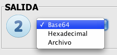

AESphere encryption process
The encryption process is clearly divided in three simple steps.
 Input and key.
Input and key.
When choosing the input we have three options: ASCII text, Hexadecimal and File

- If we choose the ASCII text option, the text area is enabled to enter a text up to 1024 characters long. The text will be filled so that the length of the input is multiple of the length of the block that the application uses to encrypt and decrypt (this fil will not affect the encryption nor the decryption process).
- In case that the hexadecimal option is selected, the input will also be filled in a similar way as the previous case.
- As for the file input, a "Browse" button will be enabled, which allows you to select an input file. It can be a file of any type: a text file (in which case its content will be encrypted), an image, a sound file, a compressed file, etc. The only limitation that exist is the size of the file, which is of 40 megabytes as maximum, as the purpose of this application is mainly dedactic, and bigger files cuold lead tto a very long process and could even break the Java stack.

As for the key, we also have three options: ASCII text, Hexadecimal and File (base64).
We have to choose the soze that the key will have: 128, 192 or 256 bits. This size will determine the number of rounds that the encryption process has: 10, 12 or 14 respectively.
The number of characters to enter will depend directly on the size chosen. The application does not allow to enter more characters than especified. If we choose the option "File", we will be allowed to browse for a file with a saved key. From the "File" menu we can save and load keys so that this process is more comfortable.
Output.
Once the key an input have been chosen, we have to choose the output format.

The output has the options base64, Hexadecimal y File. The format of the encryption output will depend on this choice. If the option selected is "File", a path has to be specified for the file, or choose one by pressing the button "Browse" If we choose an existing file, it will be overwritten during the encryption process.
 Advanced options.
Advanced options.
Finally, we have to choose the encryption method and the execution mode.

In the selection box "Encryption method" we can choose if the encryption will be performed using ECB or CBC, two different ways of manging the blocks from the input. If CBC is selected, a check box for introducing the initialization vector manually will be enabled. if we don't select this box, the initilization vector will be generated randomly.

By choosing if the execution mode is direct or step by step, we can have in the output the result of the steps of the process alongside the encryption output. If the mode "step by step" is chosen, the encryption process will be slower. Besides, the step by step option will show onle the steps for the first and last block of the input if it is too big.
From the "File" menu we van load and save keys as commented previously, and from the "Edit" menu we can copy and paste all the field we need to.
By pressing the button "Next" we will launch the process.
The application will check that each field is filled in correctly, warning the user in case that one of them is empty or has a wrong value.
By pressing the "Cancel" button we will return to the main window of the application.
For more detailed and theoric information of this process, please see:
Encryption,Decryption, AddRoundKey, MixColumns, ShiftRows, SubBytes, Base64, ECB, CBC.